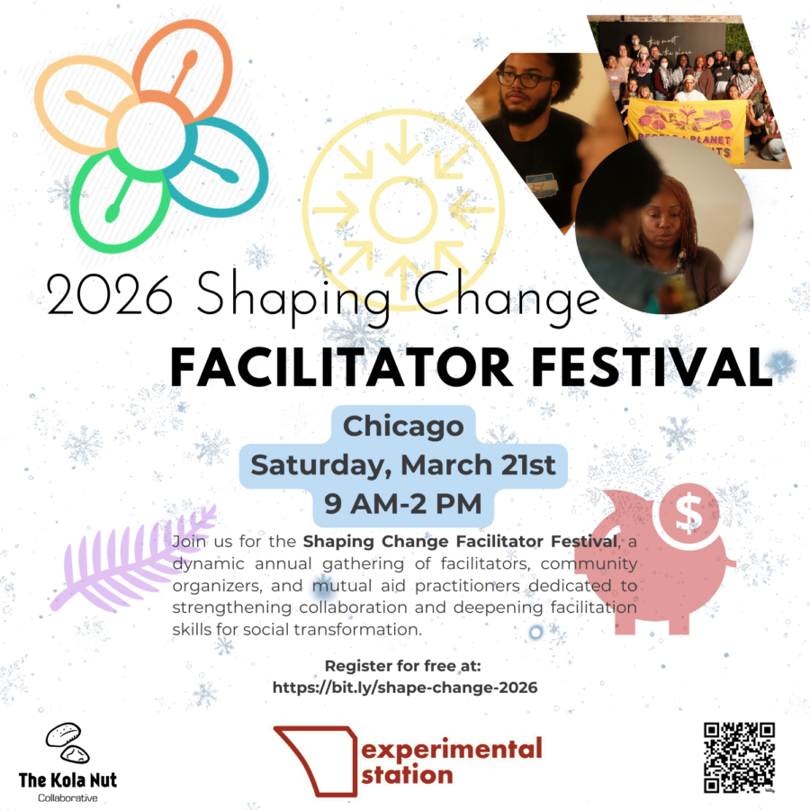

The 2nd Annual Shaping Change Facilitator Festival
The Shaping Change Facilitator Festival returns for its second year as a gathering for facilitators, organizers, cooperative builders, and community leaders committed to strengthening Chicago’s solidarity economy ecosystem.
Last year, more than 60 participants came together for a powerful day of exchange and relationship-building. Participants described the experience as:
“A tangible way to connect and build solidarity.”
“Welcoming and accessible in a way that fostered closeness and care.”
“Simple in structure, but deep and powerful.”
“Energizing, inspiring, and healing in times that feel isolating.”
Dozens of new collaborations were sparked. Skills were exchanged. Resources moved. People left not just inspired—but connected.
In 2026, we build on that momentum.